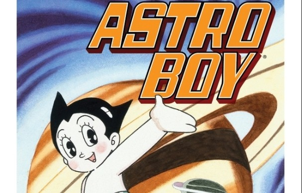

Children's comics: the kodomo manga (1920-1930)
The best moment that the manga lived is between the 1920s and 1930s, since it focused specifically on young
people and children. During these years, the kodomo manga genre emerged, with works such as The Adventures
of Shochan (1923) by Shousei Oda and The Three Musketeers with Boots on their Heads (1930)
by Taisei Makino
and Suimei Imoto. Thanks to this, manga began to be exported outside of Japan for consumption as
entertainment.

Osamu Tezuka, Pioneer of Modern Manga (1946)

During that time, Osamu Tezuka, a 20-year-old student who was enthusiastic about
Disney and Fleischer
animations, would be the cause of a drastic change in Japanese manga.
The New Treasure Island is one of his most important works, which gained popularity thanks to the
application of a cinema-like style that included fluid action scenes and sound effects. This work came to
market almost more than 700 thousand copies.
Massification of manga (1959)
With the economic boom, the Japanese people needed more manga production. Due to this demand, one of the
major book publishers, Kōdansha , began to inquire into the magazine market in 1959.
Shonen Magazine changed the monthly schedule and turned it into a weekly one, which increased production and
managed to pay its authors better salaries. Inevitably, other publishing groups would appear, including
Shueisha , Futabasha or Shōgakukan.